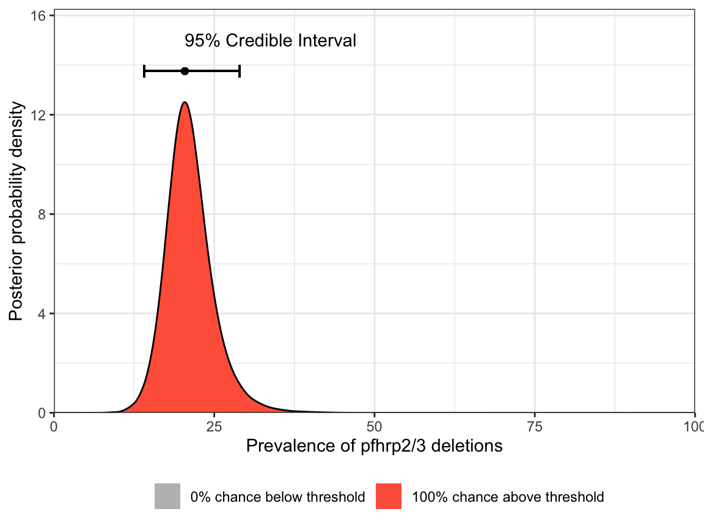
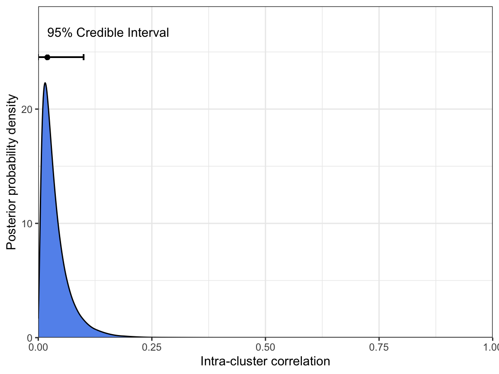
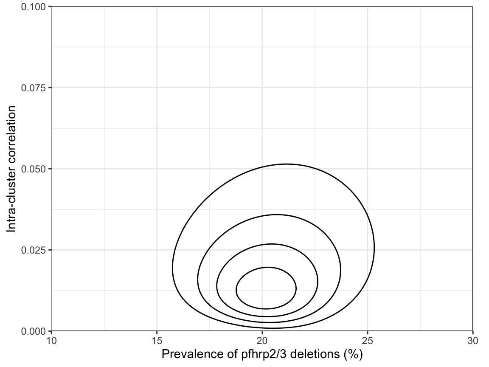

library(tidyverse)
library(DRpower)
library(here)Analysis of pfhrp2/3 data
The data
The data for this analysis come from a study by Feleke et al. (2021). See the description in the Data section for more details on this dataset. In short, the data come from a prospective, cross-sectional survey conducted in northern and western Ethiopia between 2017-2018. False-negative samples by HRP2-based RDT were sent for genomic sequencing to confirm pfhrp2/3 deletions. We are interested in the prevalence of deletions at the province level, and in particular comparing this prevalence against the WHO Master Protocol threshold of 5%.
We start by loading packages:
After loading the data from the PGEforge data folder, we will focus our attention on the Tigray province:
# import data from PGEforge and filter to Tigray region
df_Tigray <- read.csv(here("data/pfhrp2-3_counts", "Feleke_pfhrp2.csv")) |>
filter(ADMIN1 == "Tigray")
# display the table
df_Tigray |>
kable() |>
kable_styling(bootstrap_options = c("striped", "hover", "condensed"))| Country | ADMIN1 | Site | Longitude | Latitude | Year_start | Year_end | Num_pfhrp2_tested | Num_pfhrp2_deleted |
|---|---|---|---|---|---|---|---|---|
| Ethiopia | Tigray | Ahferom | NA | NA | 2017 | 2018 | 117 | 18 |
| Ethiopia | Tigray | Atseged Tsimbila | NA | NA | 2017 | 2018 | 160 | 48 |
| Ethiopia | Tigray | Gulomekeda | NA | NA | 2017 | 2018 | 21 | 5 |
| Ethiopia | Tigray | K. Humera | NA | NA | 2017 | 2018 | 176 | 39 |
| Ethiopia | Tigray | L. Adiabo | NA | NA | 2017 | 2018 | 145 | 22 |
| Ethiopia | Tigray | T. Adiabo | NA | NA | 2017 | 2018 | 69 | 10 |
Although we have a lot of information here, we only really need the final two columns of this data.frame - the number tested and the number of pfhrp2 deletions found.
Estimating the prevalence
Nine times out of ten, the thing we’re interested in is the prevalence of pfhrp2/3 deletions. We can estimate this using the get_prevalence() function, using values from the data.frame above:
# estimate the prevalence of deletions
get_prevalence(n = df_Tigray$Num_pfhrp2_deleted,
N = df_Tigray$Num_pfhrp2_tested) MAP CrI_lower CrI_upper prob_above_threshold
1 20.4 14.11 28.93 1Our point estimate of the prevalence is 20.4%, and our Bayesian 95% credible interval (CrI) is from 14.11% to 28.93%. Here, we have used the maximum a posteriori (MAP) estimate as out point estimate, but other options are available (see ?get_prevalence).
We can also produce a simple plot of the posterior distribution of the prevalence:
# plot the posterior distribution of the prevalence
plot_prevalence(n = df_Tigray$Num_pfhrp2_deleted,
N = df_Tigray$Num_pfhrp2_tested)
Notice that both the table output and the plot give a probability close to 100% of being above the 5% threshold. Based on these results we would be justified in switching RDTs.
Estimating the intra-cluster correlation
A second quantity that we might be interested in is the level of intra-cluster correlation. This tells us whether the prevalence is consistent between sites (low ICC) or highly variable between sites (high ICC). A high ICC can be caused by many factors, including a patchy geographic distribution in the prevalence of deletions within the province. Not only is this interesting information in itself, it also provides extremely useful context for future studies in the same region or neighbouring regions.
We can estimate the ICC using the get_ICC() function:
# estimate the ICC
get_ICC(n = df_Tigray$Num_pfhrp2_deleted,
N = df_Tigray$Num_pfhrp2_tested) MAP CrI_lower CrI_upper
1 0.0151 0 0.1031Our point estimate of the ICC is around 0.015. This is below the 0.05 value that we typically assume based on analysis of historical data, which may imply that the prevalence of pfhrp2 deletions is relatively flat in the Tigray province. However, we can also see that the 95% CrI ranges from 0 to 0.103, and so we do not have very strong information here.
As with prevalence, we can produce a simple plot of the posterior distribution of ICC:
# plot the posterior distribution of the ICC
plot_ICC(n = df_Tigray$Num_pfhrp2_deleted,
N = df_Tigray$Num_pfhrp2_tested)
Finally, if we really want to understand how prevalence and ICC relate to each other, we can plot the joint distribution of both parameters. Here, we have set the breaks in both the x- and y-dimensions to focus in on the region of interest:
# joint plot of prevalence and ICC
plot_joint(n = df_Tigray$Num_pfhrp2_deleted,
N = df_Tigray$Num_pfhrp2_tested,
prev_breaks = seq(0.1, 0.3, l = 101),
ICC_breaks = seq(0, 0.1, l = 101))
This shows that there are no strong correlations between parameters, but honestly this is probably more information than we need most of the time.
Retrospective power analysis
An interesting question is: given the final sample sizes in the Tigray region, what was our power? This sort of retrospective power analysis can be useful to evaluate the strength of evidence of a study. However, it is obviously far better to perform a power analysis before conducting the study!
Here, we take the standard approach of assuming the prevalence of deletions is 10% in the region:
# estimate power using the actual sample sizes
get_power_threshold(N = df_Tigray$Num_pfhrp2_tested, prevalence = 0.1, reps = 1e3) prev_thresh power lower upper
1 0.05 79.2 76.55 81.68We find that power was around 79%, which is definitely adequate.
Summary
In summary, we estimate from the Feleke et al. (2021) data that the prevalence of pfhrp2 deletions in the Tigray region of Ethiopia was 20.4% (CrI 14.11%-28.93%) at the time of the study (2017-2018). We are highly confident that this prevalence is above the WHO threshold of 5%. We find evidence that the intra-cluster correlation may be low in this region (0.015, CrI 0.00-0.103), implying that the prevalence of pfhrp2 deletions may be relatively flat. Finally, in a retrospective power analysis we identify that this was a well-powered study, giving us increased confidence in the conclusions.